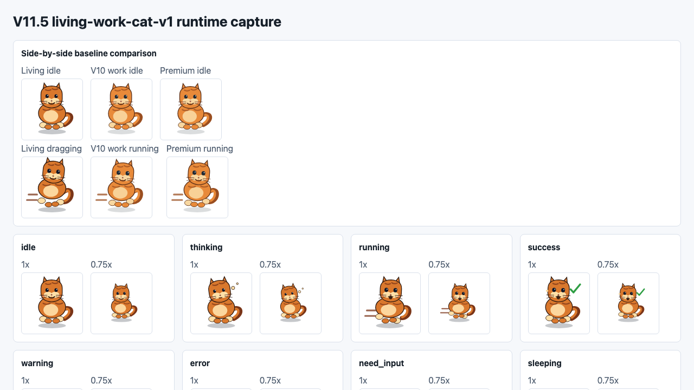
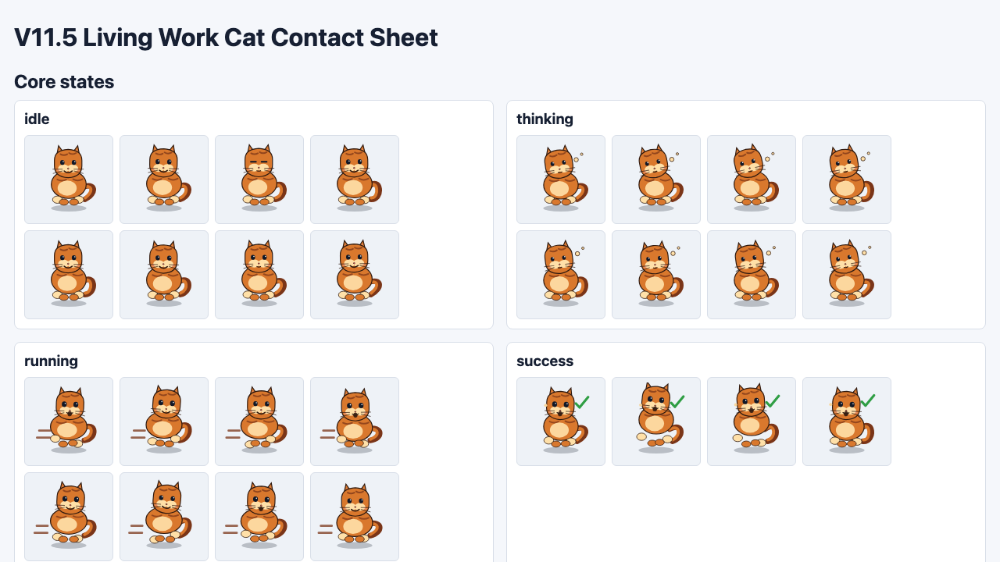
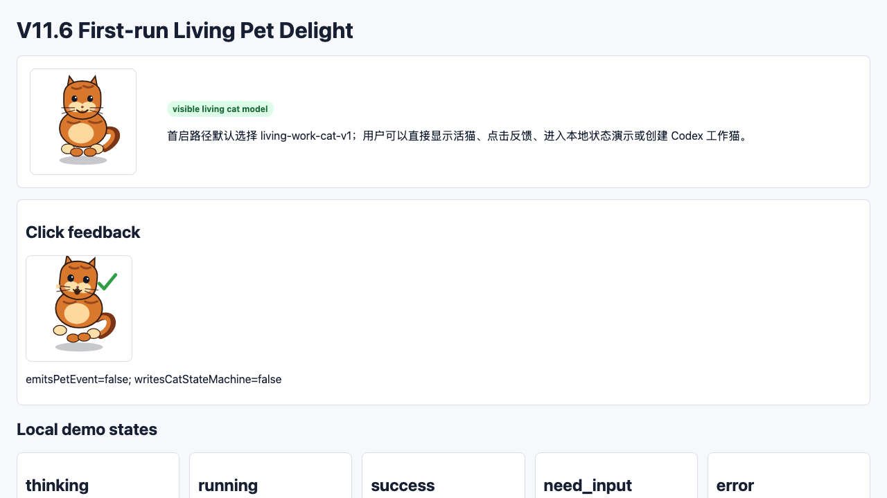
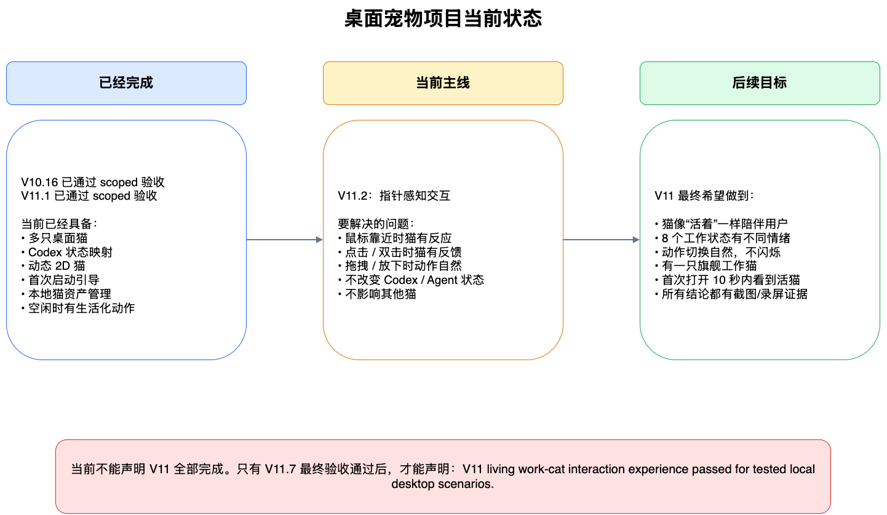
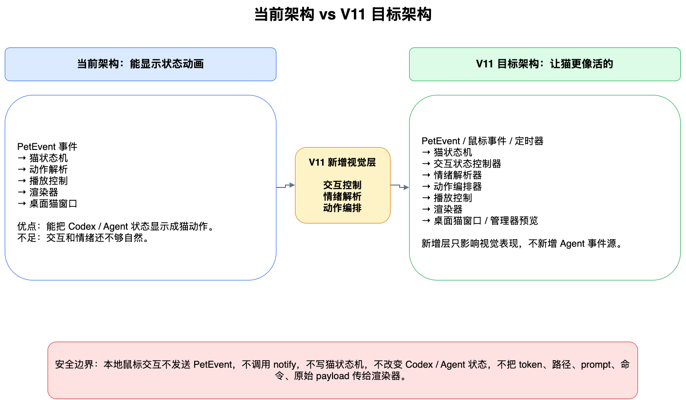
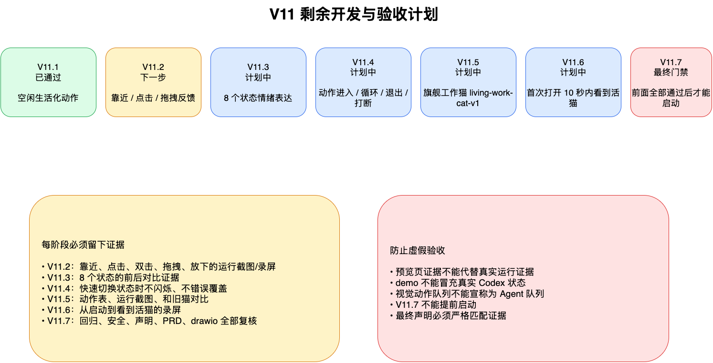
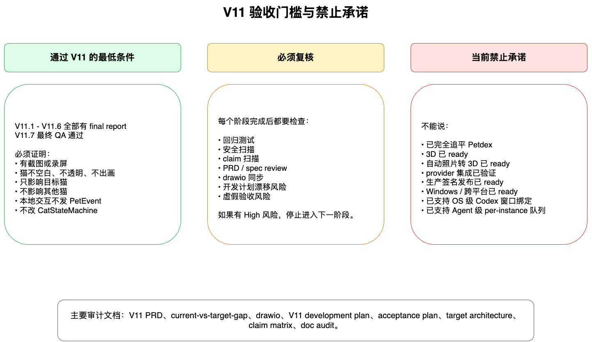

当前阶段
V11 已完成 scoped final acceptance。
V11 scoped final accepted
本页面汇总 V11 Living Work-Cat Interaction Experience 的最终验收结果、核心能力、证据入口和禁止声明边界。它是阅读入口，不替代原始 smoke / final report。
V11 已完成 scoped final acceptance。
生活化 idle、鼠标交互反馈、8 状态情绪映射、首启活猫、Codex 工作猫路径。
V11.7 evidence gate、回归、安全扫描、claim scan、PRD/spec review 已通过。
不声明 Petdex parity、3D ready、provider verified、production release、Windows/cross-platform。
下面是已生成的真实浏览器截图证据，来自 V11 运行态捕获页面和首启捕获页面。它们展示的是当前代码生成的 living work-cat 动作效果，而不是单纯的文字索引。



本轮也尝试了真实 macOS 桌面全屏截图与宠物位置区域截图，文件已保存到 docs/V11.x/evidence/screenshots/。当前截屏没有捕获到浮层宠物窗口，因此这些桌面截图不作为 V11 通过依据；本页面使用运行态捕获和首启捕获截图展示当前已完成的可视效果。
V11 living work-cat interaction experience passed for tested local desktop scenarios.
| 阶段 | 结果 | 核心证明 | 证据文件 |
|---|---|---|---|
| V11.1 Living Idle | passed | 3 分钟多样 idle、阻塞优先级、pointer-near wake、zero PetEvent。 | smoke evidence |
| V11.2 Pointer Interaction | passed | 靠近、离开、点击、双击、拖拽、放下反馈；不写 Agent 状态。 | smoke / capture |
| V11.3 Emotion Layer | passed | 8 个核心状态映射到不同情绪表达，renderer input 仅安全字段。 | smoke evidence |
| V11.4 Action Composer | passed | 优先级、瞬态 success、防 flicker、rapid-event 最终状态。 | smoke evidence |
| V11.5 Flagship Pack | passed | living-work-cat-v1、contact sheet、runtime capture、side-by-side 视觉证据。 |
smoke / contact / runtime / side-by-side |
| V11.6 First-Run Delight | passed | 首启活猫、本地 demo、Codex 工作猫路径、already-open unsupported 边界。 | smoke / capture |
| V11.7 Final Gate | passed | 证据链、回归、安全扫描、claim scan、PRD/spec review、drawio sync。 | gate smoke / final report |




| 检查项 | 结果 |
|---|---|
pnpm --filter desktop check | passed |
pnpm --filter desktop test | passed |
pnpm --filter @agent-desktop-pet/petctl test | passed |
cargo check --manifest-path apps/desktop/src-tauri/Cargo.toml | passed |
node scripts/v3_1_runtime_smoke.mjs | passed |
node scripts/v4_4_managed_session_smoke.mjs | passed |
node scripts/v10_13_premium_cat_library_smoke.mjs | passed |
node scripts/v10_14_first_run_wizard_smoke.mjs | passed |
node scripts/v10_15_built_in_gallery_ux_smoke.mjs | passed |
node scripts/v10_16_benchmark_surpass_gate_smoke.mjs | passed |
node scripts/v11_1_living_idle_smoke.mjs ... v11_7_interaction_qa_gate_smoke.mjs | passed |
Petdex parity achieved 3D ready automatic photo-to-3D ready provider integration verified asset marketplace ready remote asset loading ready production signed release ready cross-platform ready Windows ready all Codex workflows verified OS-level Codex window binding ready interactive Codex TUI monitoring ready per-instance queue ready